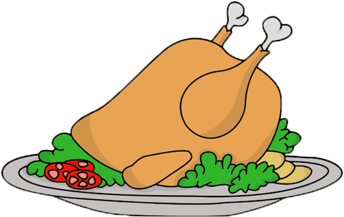

Roasted Chicken
Nothing beats a delectable roasted chicken! Especially when roasted with garlic butter, parsley, lemon, and a hint of white wine for an unbeatable flavour. This Garlic Herb Butter Roast Chicken definitely beats the pants off of any rotisserie chicken!
Buy Now